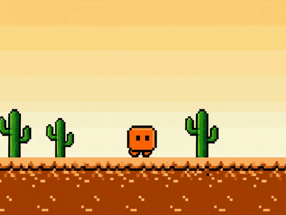

Monitor de cota para Claude Code e Codex
O medidor de cota do Claude Code,
na sua mesa.
Para quem confere a cota pelo terminal: o que resta da janela, em tempo real, na sua mesa.
O problema
Você só descobre que a cota acabou no pior momento.
O limite chega no meio do build. O relógio oficial não avisa — você descobre pelo erro. O Desk coloca o que resta na sua frente o tempo todo: um painel que você lê de relance, como o marcador de combustível de um carro.

As quatro páginas do aparelho
Um objeto de mesa, não mais uma janela.
NOW
O que resta agora
O percentual da janela de 5 horas e o da semanal, alinhados ao reset oficial — nunca um número inventado pelo relógio de parede.
BURN
Quando acaba
A curva de queima por hora do modelo dominante, com projeções alternativas: e se a sessão inteira tivesse rodado em Haiku, Sonnet, Opus ou Fable?
RHYTHM
Quando você trabalha
O padrão semanal em 24 barras. Toque numa barra e veja quantos tokens você queimou naquela hora — com a hora atual projetada, honestamente, como "até agora".
MODELS
Quem faz o trabalho
Cada linha de modelo com seu mascote respirando. Quanto mais perto do fim o pool compartilhado está, mais rápida e curta a respiração — dados vivos, não enfeite.
Como funciona
O motor no seu computador, o mostrador na sua mesa.
1
O NotchAgent lê
Os arquivos locais do Claude Code e do Codex no seu Mac. Nada sobe para servidor nenhum.
2
Calcula o que resta
A mesma janela oficial da cota — incluindo os headers de rate-limit reais da API quando disponíveis.
3
O display mostra
Snapshots sanitizados via USB-C: o Desk só renderiza um painel limitado e limpo, nada mais.
O produto
Hardware de verdade, pensado como instrumento.
Tela IPS 3,5" com toque, ESP32-S3, conexão USB-C. Firmware aberto, protocolo documentado, SDKs para Apple e .NET. Se você quiser, o aparelho inteiro é audível — até o protocolo de fábrica está no repositório.
Privacidade
Seus dados de uso não vão a lugar nenhum.
O Desk não tem credenciais, não tem nuvem, não telefona para casa. A única porta de entrada é o cabo USB do seu próprio Mac.
- Sem conta na nuvem. O aparelho não loga em nada.
- Sem telemetria. Zero tráfego de saída do dispositivo.
- Snapshots sanitizados. Sem credenciais, prompts, contas ou caminhos de arquivo.
- Local-first. O motor de cálculo vive no seu computador.
Feito à mão
Cada peça é montada pra você.
Soldada à mão, testada e calibrada antes de embarcar. Por isso a fila de confecção: o seu aparelho começa a existir quando você compra — mínimo de 15 dias até o envio.
Ficha técnica
Especificações completas.
| Display | IPS 3,5" · 480×320 · touch resistivo · brilho ajustável |
|---|---|
| Processador | ESP32-S3 · 16MB flash · PSRAM |
| Conexão | USB-C CDC · 115200 baud · protocolo 1.3 documentado |
| Firmware | 0.8.0 · atualizável · código aberto |
| Host | macOS 14+ (estável) · Windows 10/11 (beta) |
| Alimentação | Pelo próprio cabo USB-C |
| Garantia | Peça única montada e testada antes do envio |
Reserve a sua unidade
Pare de descobrir o limite pelo erro.
R$ 499,90 · à vista ou em até 12x · feito à mão sob encomenda · fila de confecção (mín. 15 dias)